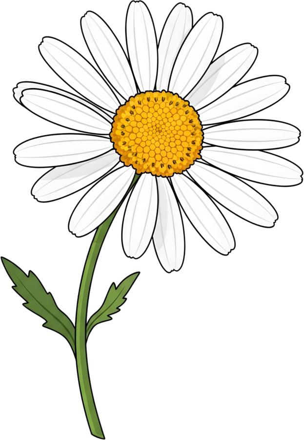
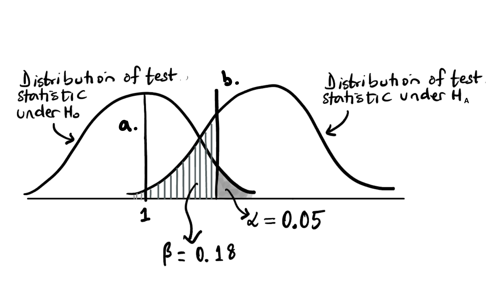
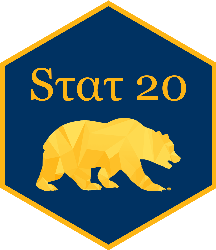

Labs 2–8 · all ~5,300 submissions · every page
24230%
of students had strong signs of AI in at least one lab
415%
we emailed, and are acting on:
↑ If you didn’t get an “Urgent” email, you are not in this group.
✓ Use AI to learn
✗ Use AI to answer
Quizzes and the final are 60% of your grade, and they test exactly what the labs practice.
We are monitoring submissions closely from now on.
Most of you are honestly working hard.
Thank you.

10:00

\(H_A: \mu > 1\)
05:00
30:00
